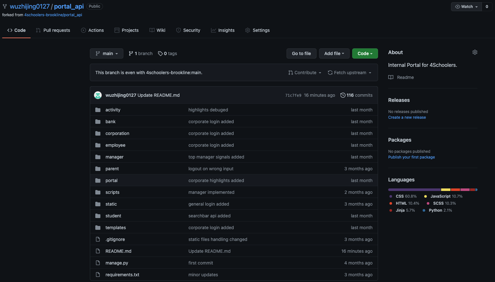

On January 29th, 2025, my family and the worldwide sporting community experienced an unspeakable tragedy.
Over the icy Potomac River, a passenger plane and a military helicopter collided in a fireball and tumbled down. Every new detail was more horrifying than the last.
The airplane came from Wichita, Kansas. Oh my god, are my parents on this plane??? They were just at the National Championships, coaching the Olympic Development camp in Wichita!
Several families on the plane were bound for Boston. It can't be…my home skating club…
There were many children and parents on the plane. For hours and hours, the news said “No survivors YET.” Please let there be just one. Just one girl, someone, who miraculously swam out of the wreckage. One crazy air bubble to protect a survivor.
I knew the skaters and coaches on the plane. I grew up with them. My parents devoted their lives to coaching and supporting them. Though my parents had booked a different return flight, a piece of our world was shattered forever.
Eight months later, my life has taken on more purpose, and I am committed to ensuring the legacy of Flight AA5342's passengers will continue forever.
In the immediate aftermath, I knew I needed to be with the victims' families. Every day for several weeks, I was either at the rink for hours sitting with Max, Joon, or fellow skaters, or at my house, where my parents and I hosted people too devastated to return to their regular routines. As an only child, Max had just lost both parents, Evgenia Shishkova and Vadim Naumov, the 1994 Pairs World Champions/1995 Olympics Silver Medalists. The Naumovs weren't just fellow coaches; they were some of my closest family friends. Joon was the bereaved widower of Jin, his wife, and father of Jinna Han, their only child, who had turned 13 just days before the crash. The Hans lived in the same town as me, and they often came over to our house. Our club also lost talented Spencer Lane and his mom Christine, who were only 16 and 49 years old.
For the first 48 hours, the loss didn't even feel real, as I watched the news analyze the crash. Seeing national news play archival footage of competitions, or get little details about Jinna and Spencer wrong, made me feel dissociated. The massive amount of flowers and gifts coming from around the world was touching, reassuring me that they were loved. Still, I knew the skating community and families needed fundamentally more. At the age of 17, this was my first time attending a funeral, let alone several in a row. I participated in all the Skating Club of Boston services, even the private family ones, because these people were not just friends; they were truly family.
After the official services concluded, the news cameras left, but we still needed to pick up the pieces and support the families–especially Joon and Max. They were both at our house frequently; my mom cooks for them, and they have our door code, so we truly have an open-door policy. Seeing my parents experience grief also changed my view of them, and my definition of “family.” The crash changed my parents' approach to coaching and parenting.
In addition to official US Figure Skating Association fundraisers, my parents and I hosted a GoFundMe for the Naumov and Han families. I shared the fundraiser with my school, and many classmates donated. I used my background in art and painting to make custom sneakers for fundraisers and auctions. I promoted these fundraisers for months, this year raising and donating approximately $10,000.
The past year has shaped me profoundly by convincing me that I want to (1) dedicate my efforts to long-lasting memorials for these skaters' legacies; and (2) dedicate my education and career to helping people. From my long athletic career, I have an interest in healthcare, but I also enjoy using my art and communication skills for marketing and awareness. I plan to study nursing, healthcare, and business so that I can enter the health professions or become a wellness entrepreneur/educator, and explore which paths are best suited to me.
Wherever I attend college, I know I will keep the memory of Jinna's huge smile, Evgenia's affectionate nicknames for me, and Vadim's comforting presence. I will be inspired to keep advancing in my studies and fundraisers because they deserve to be remembered and celebrated forever. I will also connect with the local skating club, where I'll go to practice, teach, and clear my head. When I watch the 2026 Winter Olympics, I'll imagine how excited Jinna would be, cheering on her favorite skaters as they compete. While my community has borne this immeasurable loss, I will dedicate my life to uplifting their memories.
